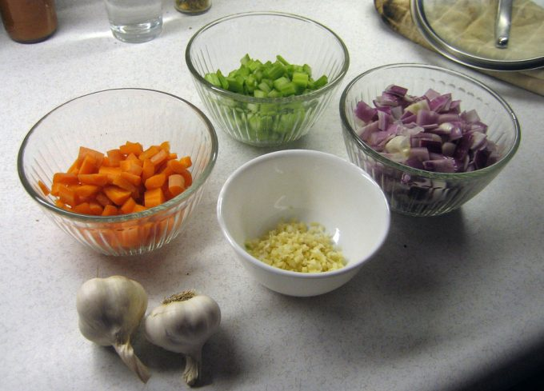
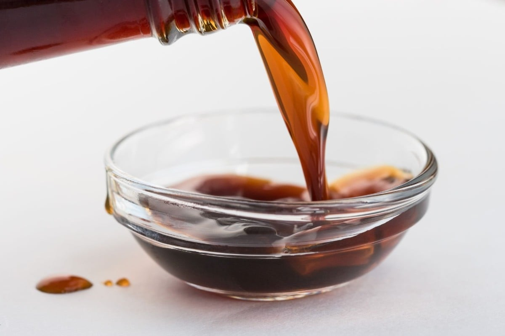

¡Comencemos con la preparación!

Mise en place de verduras
Cortamos la cebolla en juliana. El ajo, el jengibre y el pimiento en brunoise y la zanahora junto con el zapallo italiano en bastones de unos 3cm de largo.

PARA LA ELABORACIÓN DE LA SALSA:
- En un pocillo colocar 3 cdas soperas colmadas de salsa de soja.
- Añadir una o dos cdas soperas de aceite de sésamo
- Mezclamos e incorporamos el ajo junto al jengibre bien picados y agregamos unas hojas de romero.
- Reservamos
- Opcionalmente podemos dejar marinar los trozos de pollo en la salsa por media hora.
¡Ahora, a cocinar!
- Precalentar el wok o la sartén a fuego fuerte y agregar el aceite de girasol o vegetal (para esta preparación es preferi le usar uno de sabor neutro, por esto no es recomendable el aceite de oliva).
- Cuando el aceite esté bien caliente y humeando incorporamos las tiras de pollo y cocinamos a fuego fuerte.
- Cuando los trozos de pollo se encuentren bien dorados, añadir la salsa y el ajo junto con el jengibre bien picados. Cocinar unos minutos , luego retirar del fuego y reservar en un plato.
- Agregamos un poco mas de aceite a la sartén, esperamos a que esté bien caliente e incorporamos las verduras cortadas. Cocinamos a fuego fuerte durante 5 a 7 minutos.
-
Mi recomendación es añadir primero las verduras que demoran más en
cocinarse como la zanahoria y el brócoli, y por último las que se
demoran menos.
- Incorporamos el pollo con la salsa junto con las verduras y cocinamos por unos dos minutos más.
- Calentamos el arroz y colocamos en un pocillo o plato hondo.
- Retiramos el wok del fuego y vertemos el salteado sobre el arroz.
- ¡Y eso es todo nuestro plato está listo, ahora servir y disfrutar!